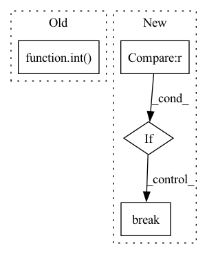

Pattern ID :28275
Before Change
task.best_resources)
splits = typ.split("x ")
gpu = splits[-1]
gpu_count = 1 if len(splits) == 1 else int( splits[0])
pos = i
if gpu:
// Convert to GCP spec.
// https://cloud.google.com/compute/docs/gpusAfter Change
gpu = None
gpu_count = 0
accelerators = r.get_accelerators()
if accelerators is not None :
assert len(accelerators) == 1, r
for gpu, gpu_count in accelerators.items():
break
if gpu is not None:
// Convert to GCP names: https://cloud.google.com/compute/docs/gpus
gpu = "nvidia-tesla-{}".format(gpu.lower())
return {In pattern: SUPERPATTERN
Frequency: 4
Non-data size: 4
Instances Fragment ID: 83561839
Project Name: skypilot-org/skypilot
Commit Name: b8d9669b1a46a70a91e7061d44e4ba3630a4878b
Time: 2021-10-14
Author: zongheng.y@gmail.com
File Name: prototype/sky/clouds/gcp.py
M Class Name: GCP
N Class Name: GCP
M Method Name: make_deploy_resources_variables(2)
N Method Name: make_deploy_resources_variables(2)
M Parent Class: clouds.Cloud
N Parent Class: clouds.Cloud
M File Name: prototype/sky/clouds/gcp.py
N File Name: prototype/sky/clouds/gcp.py
M Start Line: 80
M End Line: 108
N Start Line: 91
N End Line: 107
Before Change
else:
// First input has no number, second input is "0", third is "1", and so on.
// Ex. input, input0, input1, etc. Need to add 1 to the ending number to get the correct index.
shape = self._model_input[int( result.group(2)) + 1].shape
self._parameters[result.group(1)] = (None, "input", list(shape))
if found_input:
breakAfter Change
input_pattern = re.compile(r"([a-z]+[0-9]*)[,:]")
input_index = 0
for line in lines:
if input_index == len(self._model_input) :
// Processed all the inputs that correspond to tensors in model_input
break
result = input_pattern.search(line)
if result:
shape = self._model_input[input_index].shape
self._parameters[result.group(1)] = (None, "input", list(shape)) Fragment ID: 83561843
Project Name: quic/aimet
Commit Name: 9ae620cb72ebf0280258d32eb82991113021247d
Time: 2020-08-05
Author: 64552835+quic-klhsieh@users.noreply.github.com
File Name: TrainingExtensions/torch/src/python/aimet_torch/meta/connectedgraph.py
M Class Name: ConnectedGraph
N Class Name: ConnectedGraph
M Method Name: _parse_input_lines(2)
N Method Name: _parse_input_lines(2)
M Parent Class: AimetCommonConnectedGraph
N Parent Class: AimetCommonConnectedGraph
M File Name: TrainingExtensions/torch/src/python/aimet_torch/meta/connectedgraph.py
N File Name: TrainingExtensions/torch/src/python/aimet_torch/meta/connectedgraph.py
M Start Line: 624
M End Line: 646
N Start Line: 628
N End Line: 640
Before Change
def show_pos_emb(self, rows=1, base_size=2):
import matplotlib.pyplot as plt
hh = ww = int( tf.math.sqrt(float(self.relative_position_bias_table.shape[0] - self.cls_token_pos_len)))
ss = tf.reshape(self.relative_position_bias_table[: hh * ww], (hh, ww, -1)).numpy()
cols = int(tf.math.ceil(ss.shape[-1] / rows))
fig, axes = plt.subplots(rows, cols, figsize=(base_size * cols, base_size * rows))
for id, ax in enumerate(axes.flatten()):After Change
cols = int(tf.math.ceil(num_heads / rows))
fig, axes = plt.subplots(rows, cols, figsize=(base_size * cols, base_size * rows))
for id, ax in enumerate(axes.flatten()):
if id >= num_heads :
break
ax.imshow(pos_emb[id])
ax.set_axis_off()
fig.tight_layout()
return fig Fragment ID: 83561842
Project Name: leondgarse/keras_cv_attention_models
Commit Name: 243a634397fcf2383d6d6dcca476dfdc240d0213
Time: 2022-10-27
Author: leondgarse@gmail.com
File Name: keras_cv_attention_models/beit/beit.py
M Class Name: MultiHeadRelativePositionalEmbedding
N Class Name: MultiHeadRelativePositionalEmbedding
M Method Name: show_pos_emb(3)
N Method Name: show_pos_emb(3)
M Parent Class: keras.layers.Layer
N Parent Class: keras.layers.Layer
M File Name: keras_cv_attention_models/beit/beit.py
N File Name: keras_cv_attention_models/beit/beit.py
M Start Line: 115
M End Line: 120
N Start Line: 115
N End Line: 124
Before Change
print(f"(//{i})[{np.round(time.time()-iniv,2)}s] Valid Loss {loss.detach().item()}, cover_error {loss_cover.detach().item()}, secret_error {loss_secret.detach().item()}")
if i >= int( datalen//8) : break
avg_valid_loss = np.mean(valid_loss)
avg_valid_loss_cover = np.mean(valid_loss_cover)After Change
print(f"(//{i})[{np.round(time.time()-iniv,2)}s] Valid Loss {loss.detach().item()}, cover_error {loss_cover.detach().item()}, secret_error {loss_secret.detach().item()}, SNR {vd_snr_audio}, SSIM {ssim_image.detach().item()}")
if i >= 2 : break
//if i >= vd_datalen: break
avg_valid_loss = np.mean(valid_loss)
avg_valid_loss_cover = np.mean(valid_loss_cover) Fragment ID: 83561841
Project Name: margaritageleta/pixinwav
Commit Name: aae6873fcf4f1a5d251aae3330f1d70fd05bf989
Time: 2021-02-14
Author: noticiasmundiales99@gmail.com
File Name: src/trainer.py
M Class Name: AnonimousClass
N Class Name: AnonimousClass
M Method Name: validate(6)
N Method Name: validate(5)
M Parent Class:
N Parent Class:
M File Name: src/trainer.py
N File Name: src/trainer.py
M Start Line: 197
M End Line: 219
N Start Line: 217
N End Line: 280